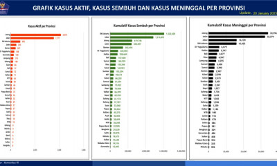

Nama : Gilang Rifaldi
NIM : 10122080
Kelas : IF-3
| : gilang_rifaldi20 | |
| : Gilang Rifaldi | |
| : Gilang Rifaldi |
Home
Informasi regulasi yang sedang berlaku di Indonesia
|
21 Jan 2023 Situasi COVID-19 di Indonesia (Update Per 21 Januari 2023) |
20 Jan 2023 Percepatan Penanganan COVID-19 di Indonesia (Update Per 20 Januari 2023) |

20 Jan 2023 Grafik Kasus Aktif, Kasus Sembuh dan Kasus Meninggal per Provinsi |
|
20 Jan 2023 Situasi COVID-19 di Indonesia (Update Per 20 Januari 2023) |
20 Jan 2023 Analisis Data COVID-19 Indonesia (Update per 15 Januari 2023) |
19 Jan 2023 Situasi COVID-19 di Indonesia (Update Per 19 Januari 2023) |
|
18 Jan 2023 Grafik Kasus Aktif, Kasus Sembuh dan Kasus Meninggal per Provinsi |
18 Jan 2023 Situasi COVID-19 di Indonesia (Update per 18 Januari 2023) |
18 Jan 2023 Percepatan Penanganan COVID-19 di Indonesia (Update per 18 Januari 2023) |
|
17 Jan 2023 Percepatan Penanganan COVID-19 di Indonesia (Update per 17 Januari 2023) |
17 Jan 2023 Grafik Kasus Aktif, Kasus Sembuh dan Kasus Meninggal per Provinsi |
17 Jan 2023 Situasi COVID-19 di Indonesia (Update per 17 Januari 2023) |